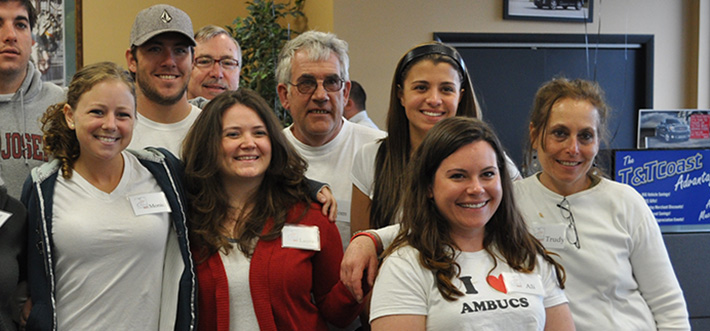

About Our Chapter
What started out as a passion project for President Ali Cole quickly became one of the most successful new chapters of the AMBUCS organization. Cole, who was receiving her doctorate in occupational therapy at Belmont University when she founded the Ocean County AMBUCS chapter, brought together friends, family, neighbors, and businessess from Ocean County to raise over $10,000 to donate dozens of AmTrykes — all in our chapter’s first year. Since then, we’ve continued to grow the chapter and spread awareness of the AMBUCS program throughout Ocean County New Jersey.
The Ocean County AMBUCS chapter is a member of the AMBUCS Ambility Program. Through the AmBility Program (a comination of AMBUCS and mobility), chapters build ramps, construct accessible playgrounds, and donate AmTrykes to people who have difficulty riding traditional bicycles.
About AMBUCS
AMBUCS is a non-profit organization dedicated to creating mobility and independence for people with disabilities. Through academic scholarships for therapists, a strong community service program, and the revolutionary Amtryke bicycles, AMBUCS
Currently, there more than 5,000 AMBUCS members spread throughout over 150 chapters in 30 states
Our Leadership

Ali Cole
President

Derrick Egan
Vice President
Mike Caruso
Vice President

Trudy Cole
Treasurer
Laura Gioia
Secretary